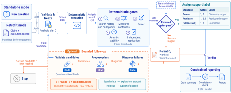
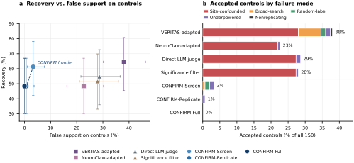
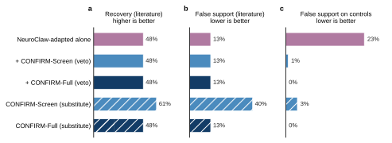
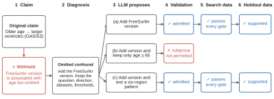

CONFIRM: Governing Scientific
Reporting
for Trustworthy Agentic Neuroimaging
1 TReNDS Center2 Georgia Institute of Technology3 University of Houston–Clear Lake
4 McWilliams School of Biomedical Informatics, The University of Texas Health Science Center at Houston
5 Georgia State University6 Emory University
An agentic framework for checking neuroimaging findings. A language-model agent plans the analyses, and code checks the evidence before a claim receives support.
The framework
How CONFIRM checks a claim
Before looking at results, the agent specifies what to test, which data to use, and what the evidence must show. CONFIRM fixes this plan, runs the analysis, and applies five checks. A claim is labeled supported when it passes every check required by the chosen reporting standard.

Screen
Accounts for the tests tried and checks for measured confounds: factors such as scanning site that could explain the apparent association.
Replicate
Also requires the finding to appear again in an independent sample. This is the replication check.
Full
Also checks whether the sample can detect a pre-specified effect size (statistical power) and whether the result persists across planned analysis choices (stability).
Main results
Reducing false support
We test methods on claims supported by prior studies and on designed controls: test cases with problems such as scanning-site differences or random group labels. Accepting a control counts as false support.
In the comparison of claims about individual brain measures, CONFIRM-Full supports 15 of 31 claims supported by prior studies and none of the 150 controls. The four comparison methods accept between 34 and 57 controls.
0/ 150
Controls incorrectly accepted
15/ 31
Claims from prior studies supported
CONFIRM-Full
Individual brain measures

Auditing an existing agent
Checking another agent's claims
We apply CONFIRM to claims accepted by the adapted NeuroClaw agent. Requiring those claims to pass CONFIRM-Full reduces accepted controls from 34 to 0. All 15 claims supported by prior studies that the agent accepted still pass.

Agent follow-up
More supported revisions with fewer model calls
We compare three ways to help an agent revise an analysis: tell it only that the analysis failed (failure-blind retry), ask it to critique its own analysis (Self-Refine), or give it CONFIRM's failed checks (CONFIRM diagnosis).
In the representative run below, each method starts from the same 215 withheld claims. For each claim, the agent has three rounds and can propose up to five revised plans per round. All methods use the same rules for checking plans and accounting for repeated tests.
| Feedback method | Model calls |
Revised plans tested |
Pass during revision (count) |
Pass on held-out data (%) |
|---|---|---|---|---|
| Failure-blind retry | 765 | 3,073 | 49 | 7% |
| Self-Refine | 1,301 | 2,161 | 54 | 9% |
| CONFIRM diagnosis | 653 | 2,971 | 70 | 17% |
During revision: the agent uses the existing data to develop and test revised plans. The count shows how many pass all checks on these data. This support is exploratory because the data have already informed the revisions.
Held-out data: after a revised plan is fixed, it is tested on data kept out of the revision process. The percentage shows how many of the revisions tested there pass all checks. Percentages are rounded as in the paper.
Example: revising a claim about age and brain structure
An analysis of the OASIS3 dataset linked older age to larger brain ventricles. It omitted the version of FreeSurfer used to process the scans. Because software version was associated with participant age, software differences could explain part of the apparent age effect. CONFIRM identified this omission and withheld support.
The agent proposed three revisions. Two accounted for software version and passed all checks on held-out data. One introduced an age cutoff outside the permitted subgroups, so CONFIRM rejected it before running it. The original claim remains withheld.

NeuroClaimBench
489 tasks for evaluating scientific claims
NeuroClaimBench combines scientific questions, designed controls, and tests on additional study datasets. The release contains the questions, analysis plans, expected support labels, and reported results. Individual participants' data remain with the original study providers.
Explore the dataset on Hugging Face- Scientific tasks
- 279
- Designed controls
- 150
- Tasks on additional study datasets
- 60